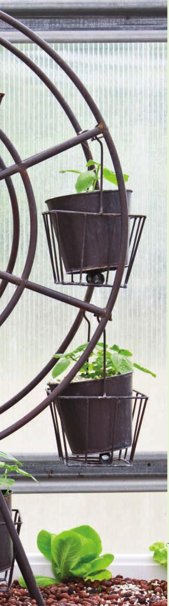

MjMWVii wmmm HYDROPONIC GROWING SYSTEMS DIY HYDROPONIC SYSTEMS ARE A great way to create a custom garden catered to your location, crop, and desired aesthetics. Many beginning hydroponic growers decide to build their own systems because of the cost of retail systems, but from personal experience, I have found building DIY systems may not always be the cheapest option, especially if there are mistakes in the system design. I love creating original systems built for specific locations, but creating original systems can often involve a lot of expensive mistakes. I've purchased items that don't fit, or wouldn't hold after I glued them into place, or broke, or didn't provide enough light, or didn't provide enough drainage . . . In the end, I learned a lot from my mistakes and I'm thankful for that, but I also spent a lot of money learning and making those mistakes. The following systems pull from my experience, and my mistakes, to save you time and money. HOW TO CHOOSE A SYSTEM Choosing which hydroponic system to install in your home requires you to take many variables into account and to decide which matters most to you. Among them are crop selection, preferred location of the hydroponic garden, maintenance demands, ease of use, and the amount of maintenance and upkeep each requires. Initial cost is important too, of course, as is the cost for energy consumption, inputs, and other ongoing maintenance expenses. Choosing a System by Crop Knowing what you want to grow should be the first consideration when choosing a hydroponic system. There are systems that can grow a wide range of crops (i.e., flood and drain) and there are some systems that work best for crops with specific growth habits. One of the first systems in this chapter is a hydroponic 39
